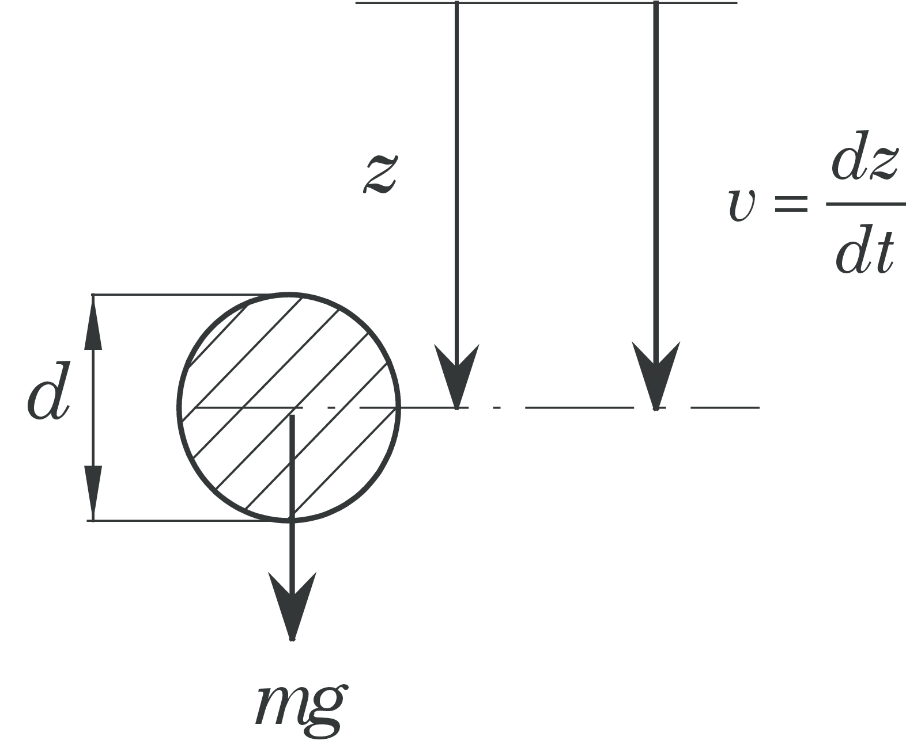
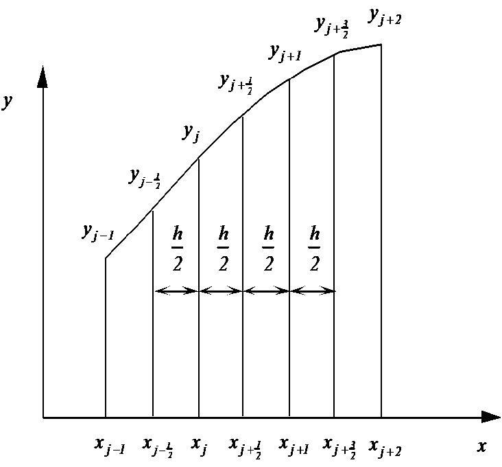

Numerical Methods for Engineers
A digital compendium
Jan 15, 2015
Based on: Numeriske Beregninger by J.B. Aarseth.
Important elements:
Initial value problems for Ordinary Differential Equations
Introduction
With an initial value problem for an ordinary differential equation (ODE) we mean a problem where all boundary conditions are given for one and the same value of the independent variable. For a first order ODE we get e.g. $$ \begin{align} \label{eq:1101} y'(x)&=f(x,y) \\ y(x_0)&=a \nonumber \end{align} $$ while for a second order ODE we get $$ \begin{align} \label{eq:1102} y''(x)&=f(x,y,y') \\ y(x_0)&=a,\ y'(x_0) = b \nonumber \end{align} $$ A first order ODE, as shown in Equation \eqref{eq:1101}, will always be an initial value problem. For Equation \eqref{eq:1102}, on the other hand, we can for instance specify the boundary conditions as follows, $$ \begin{align} y(x_0)=a,\ y(x_1) = b \nonumber \end{align} $$ With these boundary conditions Equation \eqref{eq:1102} presents a boundary value problem. In many applications boundary value problems are more common than initial value problems. But the solution technique for initial value problems may often be applied to solve boundary value problems.
Both from an analytical and numerical viewpoint initial value problems are easier to solve than boundary value problems, and methods for solution of initial value problems are more developed than for boundary value problems.
If we are to solve an initial value problem of the type in Equation \eqref{eq:1101}, we must first be sure that it has a solution. In addition we will demand that this solution is unique. A sufficient solution for this is that both \( f(x,y) \) and \( \frac{\partial f}{\partial y} \) are continuous in and around \( x_0 \). For \eqref{eq:1102} this conditions becomes that \( f(x,y) \), \( \frac{\partial f}{\partial y} \) and \( \frac{\partial f}{\partial y'} \) are continuous in and around \( x_0 \). Similarly for higher order equations.
Example: Violation of the criteria for uniqueness and existence
$$ \begin{equation} y' = y^{\frac{1}{3}},\ y(0)=0 \nonumber \end{equation} $$ Here \( f=y^\frac{1}{3} \) and \( \frac{\partial f}{\partial y}=\frac{1}{3y^\frac{2}{3}} \). \( f \) is continuous in \( x=0 \), but that's not the case for \( \frac{\partial f}{\partial y} \). It may be shown that this ODE has two solutions: \( y=0 \) and \( y=(\frac{2}{3}x)^\frac{2}{3} \). Hopefully this equation doesn't present a physical problem. A problem of more interest is shown below.

The figure shows a mathematical pendulum where the motion is described by the following equation: $$ \begin{align} \frac{\partial^2 \theta}{\partial \tau^2} + \frac{g}{l}\sin (\theta) = 0 \label{eq:1103a}\\ \theta (0) = \theta_0 ,\ \frac{d\theta}{d\tau}(0) = 0 \label{eq:1103b} \end{align} $$ We introduce a dimensionless time \( t \) given by \( t=\sqrt{\frac{g}{l}}\cdot\tau \) such that \eqref{eq:1103a} and \eqref{eq:1103b} may be written as $$ \begin{align} \label{eq:1104a} \ddot{\theta}(t) + \sin (\theta (t)) = 0 \\ \theta (0) = \theta_0 ,\ \dot\theta (0) = 0 \label{eq:1104b} \end{align} $$ The dot denotes derivation with respect to the dimensionless time \( t \). For small displacements we can set \( \sin (\theta) \approx \theta \), such that \eqref{eq:1104a} and \eqref{eq:1104b} becomes $$ \begin{align} \label{eq:1105a} \ddot\theta (t)& + \theta (t) = 0 \\ \theta (0)& = \theta_0 ,\ \dot\theta (0) = 0 \label{eq:1105b} \end{align} $$
The difference between \eqref{eq:1104a} and \eqref{eq:1105a} is that the latter is linear, while the first is non-linear. The analytical solution of Equations \eqref{eq:1104a} and \eqref{eq:1104b} is given in Appendix G.2. in the compendium. An \( n \)'th order linear ODE may be written on the form $$ \begin{equation} \label{eq:1106} a_n(x)y^{(n)}(x)+a_{n-1}(x)y^{(n-1)}(x)+\cdots+a_1(x)y'(x)+a_0(x)y(x)=b(x) \end{equation} $$ where \( y^{(k)}, k=0,1,\dots n \) is referring to the \( k \)'th derivative and \( y^{(0)}(x)=y(x) \).
If one or more of the coefficients \( a_k \) also are functions of at least one \( y^{(k)},\ k = 0,1,\dots n \), the ODE is non-linear. From \eqref{eq:1106} it follows that \eqref{eq:1104a} is non-linear and \eqref{eq:1105a} is linear.
Analytical solutions of non-linear ODEs are rare, and except from some special types, there are no general ways of finding such solutions. Therefore non-linear equations must usually be solved numerically. In many cases this is also the case for linear equations. For instance it doesn't exist a method to solve the general second order linear ODE given by $$ \begin{equation} a_2(x)\cdot y''(x)+a_1(x)\cdot y'(x) +a_0(x)\cdot y(x) =b(x)\nonumber \end{equation} $$
From a numerical point of view the main difference between linear and non-linear equations is the multitude of solutions that may arise when solving non-linear equations. In a linear ODE it will be evident from the equation if there are special critical points where the solution change character, while this is often not the case for non-linear equations.
For instance the equation \( y'(x)=y^2(x),\ y(0)=1 \) has the solution \( y(x)=\frac{1}{1-x} \) such that \( y(x) \to \infty \) for \( x \to 1 \), which isn't evident from the equation itself.
Taylor's method
Taylor's formula for series expansion of a function \( f(x) \) around \( x_0 \) is given by $$ \begin{equation} f(x)=f(x_0)+(x-x_0)\cdot f'(x_0)+\frac{(x-x_0)^2}{2}f''(x_0)+\dots +\frac{(x-x_0)^n}{n !}f^{(n)}(x_0)+ \text{remainder} \nonumber \end{equation} $$ Let's use this formula to find the first terms in the series expansion for \( \theta(t) \) around \( t=0 \) from the differential equation given in \eqref{eq:1105a}: $$ \begin{align*} &\ddot{\theta} (t) +\theta (t) = 0 \\ &\theta (0) = \theta_0,\ \dot{\theta}(0)=0 \end{align*} $$ We set \( \theta(t) \approx \theta(0)+t\cdot\dot{\theta}(0)+\frac{t^2}{2}\ddot\theta(0)+\frac{t^3}{6}\dddot\theta(0)+\frac{t^4}{24}\theta^{(4)}(0) \). By use of the initial conditions \( \theta(0)=\theta_0,\ \dot\theta(0)=0 \) we get $$ \begin{equation} \theta(t)\approx\theta_0 +\frac{t^2}{2}\ddot\theta+\frac{t^3}{6}\dddot\theta(0)+\frac{t^4}{24}\theta^{(4)}(0) \nonumber \end{equation} $$ From the differential equation we have \( \ddot\theta(t)=-\theta(t)\to \ddot\theta(0)=-\theta(0)=-\theta_0 \)By differentiation we get \( \dddot\theta(t)=-\dot\theta(t)\to \ddot\theta(0)=-\theta(0)=-\theta_0 \)
We now get $$ \begin{equation} \theta^{(4)}(t)=-\ddot\theta(t) \to \theta^{(4)}(0)=-\ddot\theta(0)=\theta_0 \nonumber \end{equation} $$ Setting this into the expression for \( \theta(t) \) gives \( \theta(t)\approx \theta_0\left(1-\frac{t^2}{2}+\frac{t^4}{24}\right)=\theta_0\left(1-\frac{t^2}{2!}+\frac{t^4}{4!}\right) \)
If we include \( n \) terms, we get $$ \begin{equation} \theta(t)\approx \theta_0\cdot \left(1-\frac{t^2}{2!}+\frac{t^4}{4!}-\frac{t^6}{6!}+\dots+(-1)^n \frac{t^{2n}}{(2n)!}\right) \nonumber \end{equation} $$
If we let \( n \to \infty \) we see that the parentheses give the series for \( \cos(t) \). In this case we have found the exact solution \( \theta(t)=\theta_0\cos(t) \) of the differential equation. Since this equation is linear we manage in this case to find a connection between the coefficients such that we recognize the series expansion of \( \cos(t) \).
Let's try the same procedure on the non-linear version \eqref{eq:1104a} $$ \begin{align} \nonumber \ddot{\theta}(t)& + \sin \left(\theta (t)\right) = 0 \\ \theta (0) &= \theta_0 ,\ \dot\theta (0) = 0 \nonumber \end{align} $$ We start in the same manner: \( \theta(t) \approx \theta(0)+\frac{t^2}{2}\ddot\theta(0)+\frac{t^3}{6}\dddot\theta(0)+\frac{t^4}{24}\theta^{(4)}(0) \). From the differential equation we have \( \ddot\theta=-\sin (\theta) \to \ddot\theta(0)=-\sin(\theta_0) \), which by consecutive differentiation gives $$ \begin{align} &\dddot\theta=-\cos(\theta)\cdot\dot\theta \to \dddot\theta(0)=0 \nonumber \\ &\theta^{(4)}=\sin(\theta)\cdot\dot\theta^2-\cos(\theta)\cdot\ddot\theta \to \theta^{(4)}(0)=-\ddot\theta(0)\cos(\theta(0))=\sin(\theta_0)\cos(\theta_0) \nonumber \end{align} $$ Inserted above: \( \theta(t) \approx \theta_0 -\frac{t^2}{2}\sin(\theta_0) + \frac{t^4}{24} \sin (\theta_0) \cos (\theta_0) \).
We may include more terms, but this complicates the differentiation and it is hard to find any connection between the coefficients. When we have found an approximation for \( \theta(t) \) we can get an approximation for \( \dot\theta(t) \) by differentiation: \( \dot\theta(t) \approx -t\sin(\theta_0) + \frac{t^3}{8} \sin (\theta_0) \cos (\theta_0) \).
Series expansions are often useful around the starting point when we solve initial value problems. The technique may also be used on non-linear equations.
Symbolic mathematical programs like Maple and Mathematica do this easily.
We will end with one of the earliest known differential equations, which Newton solved with series expansion in 1671. $$ \begin{equation*} y'(x) =1-3x+y+x^2+xy,\ y(0)=0 \end{equation*} $$ Series expansion around \( x=0 \) gives $$ \begin{equation*} y(x) \approx x\cdot y'(0)+ \frac{x^2}{2} y''(0)+\frac{x^3}{6}y'''(0)+\frac{x^4}{24}y^{(4)}(0) \end{equation*} $$ From the differential equation we get \( y'(0)=1 \). By consecutive differentiation we get $$ \begin{equation*} \begin{array}{lclclcr} y''(x) &=&-3+y'+2x+xy'+y &\to& y''(0)&=&-2\\ y'''(x)&=& y''+2+xy''+2y' &\to& y'''(0)&=& 2\\ y^{(4)}(x)&=&y'''+xy'''+3y'' &\to &y^{(4)}(0)&=&-4 \end{array} \end{equation*} $$ Inserting above gives \( y(x) \approx x-x^2+\frac{x^3}{3}-\frac{x^4}{6} \).
Newton gave the following solution: \( y(x) \approx x-x^2+\frac{x^3}{3}-\frac{x^4}{6}+ \frac{x^5}{30}-\frac{x^6}{45} \).
Now you can check if Newton calculated correctly. Today it is possible to give the solution on closed form with known functions as follows, $$ \begin{align*} y(x)=&3\sqrt{2\pi e}\cdot \exp\left[x\left(1+\frac{x}{2}\right)\right]\cdot \left[\text{erf}\left(\frac{\sqrt{2}}{2}(1+x)\right)-\text{erf}\left(\frac{\sqrt{2}}{2}\right)\right]\\ +& 4\cdot\left[1-\exp[x\left(1+\frac{x}{2}\right)\right]-x \end{align*} $$
Note the combination \( \sqrt{2\pi e} \). See Hairer et al. [1] section 1.2 for more details on classical differential equations.
Reduction of Higher order Equations
When we are solving initial value problems, we usually need to write these as sets of first order equations, because most of the program packages require this.
Example: \( y''(x)+y(x)=0,\ y(0)=a_0,\ y'(0)=b_0 \)
We may for instance write this equation in a system as follows, $$ \begin{align*} y'(x)=&g(x)\\ g'(x)=&-y(x)\\ y(0)=&a_0,\ g(0)=b_0 \end{align*} $$
Another example: $$ \begin{align*} &y'''(x)+2y''(x)-(y'(x))^2+2y(x)=x^2\\ &y(0)=a_0,\ y'(0)=b_0,\ y''(0)=c_0 \end{align*} $$ We set \( y'(x)=g(x) \) and \( y''(x)=g'(x)=f(x) \), and the system may be written as $$ \begin{align*} y'(x)=&g(x)\\ g'(x)=&f(x)\\ f'(x)=&-2f(x)+(g(x))^2-2y(x)+x^2 \end{align*} $$ with initial values \( y(0)=a_0,\ g(0)=b_0,\ f(0)=c_0 \).
This is fair enough for hand calculations, men when we use program packages a more systematic procedure is needed. Let's use the equation above as an example.
We start by renaming \( y \) to \( y_1 \). We then get the following procedure: $$ \begin{align*} y&'=y'_1=y_2\\ y&''=y''_1=y'_2=y_3 \end{align*} $$ The system may then be written as $$ \begin{align*} y'_1(x)=&y_2(x)\\ y'_2(x)=&y_3(x)\\ y'_3(x)=&-2y_3(x)+(y_2(x))^2-2y_1(x)+x^2 \end{align*} $$ with initial conditions \( y_1(0)=a_0,\ y_2(0)=b_0,\ y_3(0)=c_0 \).
The general procedure to reduce a higher order ODE to a system of first order ODEs becomes the following:
Given the equation $$ \begin{align} \label{eq:1127} &y^{(m)}=f(x,y,y',y'',\dots,y^{(m-1)})\\ &y(x_0)=a_1,\ y'(x_0)=a_2,\ \dots,y^{(m-1)}(x_0)=a_m \nonumber\\ \end{align} $$ where $$ \begin{align*} y^{(m)}\equiv \frac{d^my}{dx^m} \end{align*} $$ with \( y=y_1 \), we set $$ \begin{align} &y'_1=y_2 \nonumber \\ \nonumber &y'_2=y_3\\ \nonumber &.\\ \nonumber &.\\ \nonumber &y'_{m-1}=y_m\\\nonumber\\\nonumber &y_1(x_0)=a_1,y_2(x_0)=a_2,\dots,y_m(x_0)=a_m \label{eq:1128} \end{align} $$
Example: Reduction of higher order systems
Write the following ODE as a system of first order ODEs: $$ \begin{align*} y'''-y'y''-(y')^2+2y=x^3 \\ y(0)=a,\ y'(0)=b,\ y''(0)=c \end{align*} $$First we write \( y'''=y'y''+(y')^2-2y+x^3 \).
By use of \eqref{eq:1128} we get $$ \begin{align*} &y_1'=y_2\\ &y_2'=y_3\\ &y_3'=y_2y_3+(y_2)^2-2y_1+x^3\\ &y_1(0)=a,\ y_2(0)=b,\ y_3=c \end{align*} $$
Scientific computing with Python
In this course we will use the programming language Python to solve numerical problems. Students not familiar with Python are strongly recommended to work through the example Intro to scientific computing with Python before proceeding. If you are familiar with Matlab the transfer to Python should not be a problem.
Example: Sphere in free fall

The figure shows a falling sphere with a diameter \( d \) and mass \( m \) that falls vertically in a fluid. Use of Newton's 2nd law in the \( z \)-direction gives $$ \begin{equation} \label{eq:newton_2nd_sphere} m\frac{dv}{dt} = mg-m_fg-\frac{1}{2}m_f\frac{dv}{dt}-\frac{1}{2}\rho_fv\left|v\right|A_kC_D, \end{equation} $$ where the different terms are interpreted as follows: \( m=\rho_k V \), where \( \rho_k \) is the density of the sphere and \( V \) is the sphere volume. The mass of the displaced fluid is given by \( m_f=\rho_f V \), where \( \rho_f \) is the density of the fluid, whereas buoyancy and the drag coefficient are expressed by \( m_f \, g \) and \( C_D \), respectively. The projected area of the sphere is given by \( A_k = \frac{\pi}{4}d^2 \) and \( \frac{1}{2}m_f \) is the hydro-dynamical mass (added mass). The expression for the hydro-dynamical mass is derived in White [2], page 539-540. To write Equation \eqref{eq:newton_2nd_sphere} on a more convenient form we introduce the following abbreviations: $$ \begin{equation} \rho=\frac{\rho_f}{\rho_k},\ A=1+\frac{\rho}{2}, \ B=(1-\rho)g,\ C=\frac{3\rho}{4d}. \end{equation} $$ in addition to the drag coefficient \( C_D \) which is a function of the Reynolds number \( \displaystyle R_e = \frac{vd}{\nu} \), where \( \nu \) is the kinematical viscosity. Equation \eqref{eq:newton_2nd_sphere} may then be written as $$ \begin{equation} \label{eq:sphere_1st_order} \frac{dv}{dt}=\frac{1}{A}(B-C\cdot v\left|v\right|C_d). \end{equation} $$ In air we may often neglect the buoyancy term and the hydro-dynamical mass, whereas this is not the case for a liquid. Introducing \( v=\frac{dz}{dt} \) in Equation \eqref{eq:sphere_1st_order}, we get a 2nd order ODE as follows $$ \begin{equation} \label{eq:sphere_second_order} \frac{d^2z}{dt^2}=\frac{1}{A}\left(B-C\cdot \frac{dz}{dt}\bigg|\frac{dz}{dt}\bigg|C_d\right) \end{equation} $$ For Equation \eqref{eq:sphere_second_order} two initial conditions must be specified, e.g. \( v=v_0 \) and \( z=z_0 \) for \( t=0 \).
Figure 1 illustrates \( C_D \) as a function of \( Re \). The values in the plot are not as accurate as the number of digits in the program might indicate. For example is the location and the size of the "valley" in the diagram strongly dependent of the degree of turbulence in the free stream and the roughness of the sphere. As the drag coefficient \( C_D \) is a function of the Reynolds number, it is also a function of the solution \( v \) (i.e. the velocity) of the ODE in Equation \eqref{eq:sphere_1st_order}. We will use the function \( C_D(Re) \) as an example of how functions may be implemented in Python.
Figure 1: Drag coefficient \( C_D \) as function of the Reynold's number \( R_e \).

Python implementation of the drag coefficient function and how to plot it
The complete Python program CDsphere.py used to plot the drag
coefficient in the example above is listed below. The program uses a
function cd_sphere which results from a curve fit to the data of
Evett and Liu [3]. In our setting we will use this
function for two purposes, namely to demonstrate how functions and modules are
implemented in Python and finally use these functions in the solution of the ODE in Equations \eqref{eq:sphere_1st_order} and \eqref{eq:sphere_second_order}.
# chapter1/programs_and_modules/CDsphere.py
from numpy import logspace, zeros
# Define the function cd_sphere
def cd_sphere(Re):
"This function computes the drag coefficient of a sphere as a function of the Reynolds number Re."
# Curve fitted after fig . A -56 in Evett and Liu: "Fluid Mechanics and Hydraulics"
from numpy import log10, array, polyval
if Re <= 0.0:
CD = 0.0
elif Re > 8.0e6:
CD = 0.2
elif Re > 0.0 and Re <= 0.5:
CD = 24.0/Re
elif Re > 0.5 and Re <= 100.0:
p = array([4.22, -14.05, 34.87, 0.658])
CD = polyval(p, 1.0/Re)
elif Re > 100.0 and Re <= 1.0e4:
p = array([-30.41, 43.72, -17.08, 2.41])
CD = polyval(p, 1.0/log10(Re))
elif Re > 1.0e4 and Re <= 3.35e5:
p = array([-0.1584, 2.031, -8.472, 11.932])
CD = polyval(p, log10(Re))
elif Re > 3.35e5 and Re <= 5.0e5:
x1 = log10(Re/4.5e5)
CD = 91.08*x1**4 + 0.0764
else:
p = array([-0.06338, 1.1905, -7.332, 14.93])
CD = polyval(p, log10(Re))
return CD
# Calculate drag coefficient
Npts = 500
Re = logspace(-1, 7, Npts, True, 10)
CD = zeros(Npts)
i_list = range(0, Npts-1)
for i in i_list:
CD[i] = cd_sphere(Re[i])
# Make plot
from matplotlib import pyplot
pyplot.plot(Re, CD, '-b')
font = {'size' : 16}
pyplot.rc('font', **font)
pyplot.yscale('log')
pyplot.xscale('log')
pyplot.xlabel('$Re$')
pyplot.ylabel('$C_D$')
pyplot.grid('on', 'both', 'both')
pyplot.savefig('example_sphere.png', transparent=True)
pyplot.show()
In the following, we will break up the program and explain the different parts. In the first code line,
from numpy import logspace, zeros
the functions logspace and zeros are imported from the package numpy. The numpy package (NumPy is an abbreviation for Numerical Python) enables the use of array objects. Using numpy a wide range of mathematical operations can be done directly on complete arrays, thereby removing the need for loops over array elements. This is commonly called vectorization and may cause a dramatic increase in computational speed of Python programs. The function logspace works on a logarithmic scale just as the function linspace works on a regular scale. The function zeros creates arrays of a certain size filled with zeros. Several comprehensive guides to the numpy package may be found at http://www.numpy.org.
In CDsphere.py a function cd_sphere was defined as follows:
def cd_sphere(Re):
"This function computes the drag coefficient of a sphere as a function of the Reynolds number Re."
# Curve fitted after fig . A -56 in Evett and Liu: "Fluid Mechanics and Hydraulics"
from numpy import log10, array, polyval
if Re <= 0.0:
CD = 0.0
elif Re > 8.0e6:
CD = 0.2
elif Re > 0.0 and Re <= 0.5:
CD = 24.0/Re
elif Re > 0.5 and Re <= 100.0:
p = array([4.22, -14.05, 34.87, 0.658])
CD = polyval(p, 1.0/Re)
elif Re > 100.0 and Re <= 1.0e4:
p = array([-30.41, 43.72, -17.08, 2.41])
CD = polyval(p, 1.0/log10(Re))
elif Re > 1.0e4 and Re <= 3.35e5:
p = array([-0.1584, 2.031, -8.472, 11.932])
CD = polyval(p, log10(Re))
elif Re > 3.35e5 and Re <= 5.0e5:
x1 = log10(Re/4.5e5)
CD = 91.08*x1**4 + 0.0764
else:
p = array([-0.06338, 1.1905, -7.332, 14.93])
CD = polyval(p, log10(Re))
return CD
The function takes Re as an argument and returns the value CD. All Python functions begin with def, followed by the function name, and then inside parentheses a comma-separated list of function arguments, ended with a colon. Here we have only one argument, Re. This argument acts as a standard variable inside the function. The statements to perform inside the function must be indented. At the end of a function it is common to use the return statement to return the value of the function.
Variables defined inside a function, such as p and x1 above, are local variables that cannot be accessed outside the function. Variables defined outside functions, in the "main program", are global variables and may be accessed anywhere, also inside functions.
Three more functions from the numpy package are imported in the function. They are not used outside the function and are therefore chosen to be imported only if the function is called from the main program. We refer to the documentation of NumPy for details about the different functions.
The function above contains an example of the use of the if-elif-else block. The block begins with if and a boolean expression. If the boolean expression evaluates to true the indented statements following the if statement are carried out. If not, the boolean expression following the elif is evaluated. If none of the conditions are evaluated to true the statements following the else are carried out.
In the code block
Npts = 500
Re = logspace(-1, 7, Npts, True, 10)
CD = zeros(Npts)
i_list = range(0, Npts-1)
for i in i_list:
CD[i] = cd_sphere(Re[i])
the function cd_sphere is called. First, the number of data points to be calculated are stored in the integer variable Npts. Using the logspace function imported earlier, Re is assigned an array object which has float elements with values ranging from \( 10^{-1} \) to \( 10^7 \). The values are uniformly distributed along a 10-logarithmic scale. CD is first defined as an array with Npts zero elements, using the zero function. Then, for each element in Re, the drag coefficient is calculated using our own defined function cd_sphere, in a for loop, which is explained in the following.
The function range is a built-in function that generates a list containing arithmetic progressions. The for i in i_list construct creates a loop over all elements in i_list. In each pass of the loop, the variable i refers to an element in the list, starting with i_list[0] (0 in this case) and ending with the last element i_list[Npts-1] (499 in this case). Note that element indices start at 0 in Python. After the colon comes a block of statements which does something useful with the current element; in this case, the return of the function call cd_sphere(Re[i]) is assigned to CD[i]. Each statement in the block must be indented.
Lastly, the drag coefficient is plotted and the figure generated:
from matplotlib import pyplot
pyplot.plot(Re, CD, '-b')
font = {'size' : 16}
pyplot.rc('font', **font)
pyplot.yscale('log')
pyplot.xscale('log')
pyplot.xlabel('$Re$')
pyplot.ylabel('$C_D$')
pyplot.grid('on', 'both', 'both')
pyplot.savefig('example_sphere.png', transparent=True)
pyplot.show()
To generate the plot, the package matplotlib is used. matplotlib is the standard package for curve plotting in Python. For simple plotting the matplotlib.pyplot interface provides a Matlab-like interface, which has been used here. For documentation and explanation of this package, we refer to http://www.matplotlib.org.
First, the curve is generated using the function plot, which takes the x-values and y-values as arguments (Re and CD in this case), as well as a string specifying the line style, like in Matlab. Then changes are made to the figure in order to make it more readable, very similarly to how it is done in Matlab. For instance, in this case it makes sense to use logarithmic scales. A png version of the figure is saved using the savefig function. Lastly, the figure is showed on the screen with the show function.
To change the font size the function rc is used. This function takes in the object font, which is a dictionary object. Roughly speaking, a dictionary is a list where the index can be a text (in lists the index must be an integer). It is best to think of a dictionary as an unordered set of key:value pairs, with the requirement that the keys are unique (within one dictionary). A pair of braces creates an empty dictionary: {}. Placing a comma-separated list of key:value pairs within the braces adds initial key:value pairs to the dictionary. In this case the dictionary font contains one key:value pair, namely 'size' : 16.
Descriptions and explanations of all functions available in pyplot may be found here.
Python functions with vector arguments and modules
For many numerical problems variables are most conveniently expressed
by arrays containing many numbers (i.e. vectors) rather than single
numbers (i.e. scalars). The function cd_sphere above takes a scalar
as an argument and returns a scalar value too. For computationally
intensive algorithms where variables are stored in arrays this is
inconvenient and time consuming, as each of the array elements must be
sent to the function independently. In the following, we will
therefore show how to implement functions with vector arguments that
also return vectors. This may be done in various ways. Some
possibilities are presented in the following, and, as we shall see,
some are more time consuming than others. We will also demonstrate how
the time consumption (or efficiency) may be tested.
A simple extension of the single-valued function cd_sphere is as follows:
def cd_sphere_py_vector(ReNrs):
CD = zeros_like(ReNrs)
counter = 0
for Re in ReNrs:
CD[counter] = cd_sphere(Re)
counter += 1
return CD
The new function cd_sphere_py_vector takes in an array ReNrs and
calculates the drag coefficient for each element using the previous
function cd_sphere. This does the job, but is not very efficient.
A second version is implemented in the function
cd_sphere_vector. This function takes in the array Re and
calculates the drag coefficient of all elements by multiple calls of
the function numpy.where; one call for each condition, similarly as
each if statement in the function cd_sphere. The function is shown
here:
def cd_sphere_vector(Re):
"Computes the drag coefficient of a sphere as a function of the Reynolds number Re."
# Curve fitted after fig . A -56 in Evett and Liu: "Fluid Mechanics and Hydraulics"
from numpy import log10, array, polyval, where, zeros_like
CD = zeros_like(Re)
CD = where(Re < 0, 0.0, CD) # condition 1
CD = where((Re > 0.0) & (Re <=0.5), 24/Re, CD) # condition 2
p = array([4.22, -14.05, 34.87, 0.658])
CD = where((Re > 0.5) & (Re <=100.0), polyval(p, 1.0/Re), CD) #condition 3
p = array([-30.41, 43.72, -17.08, 2.41])
CD = where((Re > 100.0) & (Re <= 1.0e4), polyval(p, 1.0/log10(Re)), CD) #condition 4
p = array([-0.1584, 2.031, -8.472, 11.932])
CD = where((Re > 1.0e4) & (Re <= 3.35e5), polyval(p, log10(Re)), CD) #condition 5
CD = where((Re > 3.35e5) & (Re <= 5.0e5), 91.08*(log10(Re/4.5e5))**4 + 0.0764, CD) #condition 6
p = array([-0.06338, 1.1905, -7.332, 14.93])
CD = where((Re > 5.05e5) & (Re <= 8.0e6), polyval(p, log10(Re)), CD) #condition 7
CD = where(Re > 8.0e6, 0.2, CD) # condition 8
return CD
A third approach we will try is using boolean type variables. The 8
variables condition1 through condition8 in the function
cd_sphere_vector_bool are boolean variables of the same size and
shape as Re. The elements of the boolean variables evaluate to
either True or False, depending on if the corresponding element in
Re satisfy the condition the variable is assigned.
def cd_sphere_vector_bool(Re):
"Computes the drag coefficient of a sphere as a function of the Reynolds number Re."
# Curve fitted after fig . A -56 in Evett and Liu: "Fluid Mechanics and Hydraulics"
from numpy import log10, array, polyval, zeros_like
condition1 = Re < 0
condition2 = logical_and(0 < Re, Re <= 0.5)
condition3 = logical_and(0.5 < Re, Re <= 100.0)
condition4 = logical_and(100.0 < Re, Re <= 1.0e4)
condition5 = logical_and(1.0e4 < Re, Re <= 3.35e5)
condition6 = logical_and(3.35e5 < Re, Re <= 5.0e5)
condition7 = logical_and(5.0e5 < Re, Re <= 8.0e6)
condition8 = Re > 8.0e6
CD = zeros_like(Re)
CD[condition1] = 0.0
CD[condition2] = 24/Re[condition2]
p = array([4.22,-14.05,34.87,0.658])
CD[condition3] = polyval(p,1.0/Re[condition3])
p = array([-30.41,43.72,-17.08,2.41])
CD[condition4] = polyval(p,1.0/log10(Re[condition4]))
p = array([-0.1584,2.031,-8.472,11.932])
CD[condition5] = polyval(p,log10(Re[condition5]))
CD[condition6] = 91.08*(log10(Re[condition6]/4.5e5))**4 + 0.0764
p = array([-0.06338,1.1905,-7.332,14.93])
CD[condition7] = polyval(p,log10(Re[condition7]))
CD[condition8] = 0.2
return CD
Lastly, the built-in function vectorize is used to automatically
generate a vector-version of the function cd_sphere, as follows:
cd_sphere_auto_vector = vectorize(cd_sphere)
To provide a convenient and practical means to compare the various implementations of the drag function, we have collected them all in a file DragCoefficientGeneric.py. This file constitutes a Python module which is a concept we will discuss in the section How to make a Python-module and some useful programming features.
How to make a Python-module and some useful programming features
Python modules A module is a file containing Python definitions and
statements and represents a convenient way of collecting useful and
related functions, classes or Python code in a single file. A
motivation to implement the drag coefficient function was that we
should be able to import it in other programs to solve e.g. the
problems outlined in Example: Sphere in free fall. In general, a file
containing Python-code may be executed either as a main program
(script), typically with python filename.py or imported in another
script/module with import filename.
A module file should not execute a main program, but rather just
define functions, import other modules, and define global
variables.
Inside modules, the standard practice is to only have functions and
not any statements outside functions. The reason is that all
statements in the module file are executed from top to bottom during
import in another module/script [4], and thus a
desirable behavior is no output to avoid confusion. However, in many
situations it is also desirable to allow for tests or demonstration of
usage inside the module file, and for such situations the need for a
main program arises. To meet these demands Python allows for a
fortunate construction to let a file act both as a module with
function definitions only (i.e. no main program) and as an ordinary
program we can run, with functions and a main program. The latter is possible by letting the
main program follow an if test of the form:
if __name__ =='__main__':
<main program statements>
The __name__ variable is automatically defined in any module and
equals the module name if the module is imported in another
program/script, but when the module file is executed as a program,
__name__ equals the string '__main__'. Consequently, the if test
above will only be true whenever the module file is executed as a
program and allow for the execution of the <main program
statements>. The <main program statements> is normally referred to
as the test block of a module.
The module name is the file name without the suffix .py
[5], i.e. the module contained in the module file filename.py has the
module name filename. Note that a module can contain executable
statements as well as function definitions. These statements are
intended to initialize the module and are executed only the first time
the module name is encountered in an import statement. They are also
run if the file is executed as a script.
Below we have listed the content of the file
DragCoefficientGeneric.py to illustrate a specific implementation of
the module DragCoefficientGeneric and some other useful programming
features in Python. The functions in the module are the various
implementations of the drag coefficient functions from the previous
section.
Python lists and dictionaries
- Lists hold a list of values and are initialized with empty
brackets, e.g.
fncnames = []. The values of the list are accessed with an index, starting from zero. The first value offncnamesisfncnames[0], the second value offncnamesisfncnames[1]and so on. You can remove values from the list, and add new values to the end byfncnames. Example:fncnames.append(name)will appendnameas the last value of the listfncnames. In case it was empty prior to the append-operation,namewill be the only element in the list. - Dictionaries are similar to what their name suggests - a
dictionary - and an empty dictionary is initialized with empty
braces, e.g.
CD = {}. In a dictionary, you have an 'index' of words or keys and the values accessed by their 'key'. Thus, the values in a dictionary aren't numbered or ordered, they are only accessed by the key. You can add, remove, and modify the values in dictionaries. For example with the statementCD[name] = func(ReNrs)the results offunc(ReNrs)are stored in the listCDwith keyname.
funcs = [cd_sphere_py_vector, cd_sphere_vector, cd_sphere_vector_bool, \
cd_sphere_auto_vector] # list of functions to test
which allows for convenient looping over all of the functions with the following construction:
for func in funcs:
Exception handling Python has a very convenient construction for testing of potential errors with try-except blocks:
try:
<statements>
except ExceptionType1:
<remedy for ExceptionType1 errors>
except ExceptionType2:
<remedy for ExceptionType1 errors>
except:
<remedy for any other errors>
In the DragCoefficientGeneric module, this feature is used to handle
the function name for a function which has been vectorized
automatically. For such a function func.func_name has no value and
will return an error, and the name may be found by the statements in
the exception block.
Efficiency and benchmarking The function clock in the module
time, return a time
expressed in seconds for the current statement and is frequently used
for benchmarking in Python or timing of functions. By subtracting the
time t0 recored immediately before a function call from the time
immediately after the function call, an estimate of the elapsed
cpu-time is obtained. In our module DragCoefficientGeneric the
efficiency is implemented with the codelines:
t0 = time.clock()
CD[name] = func(ReNrs)
exec_times[name] = time.clock() - t0
Sorting of dictionaries
The computed execution times are for convenience stored in the dictionary exec_time to allow for pairing of the names of the functions and their execution time.
The dictionary may be sorted on the values and the corresponding keys sorted are returned by:
exec_keys_sorted = sorted(exec_times, key=exec_times.get)
Afterwards the results may be printed with name and execution time, ordered by the latter, with the most efficient function at the top:
for name_key in exec_keys_sorted:
print name_key, '\t execution time = ', '%6.6f' % exec_times[name_key]
By running the module DragCoefficientGeneric as a script, and with
500 elements in the ReNrs array we got the following output:
cd_sphere_vector_bool execution time = 0.000312
cd_sphere_vector execution time = 0.000641
cd_sphere_auto_vector execution time = 0.009497
cd_sphere_py_vector execution time = 0.010144
Clearly, the function with the boolean variables was fastest,
the straight forward vectorized version cd_sphere_py_vector was slowest
and the built-in function vectorize was nearly as inefficient.
The complete module DragCoefficientGeneric is listed below.
# chapter1/programs_and_modules/DragCoefficientGeneric.py
from numpy import linspace,array,append,logspace,zeros_like,where,vectorize,\
logical_and
import numpy as np
from matplotlib.pyplot import loglog,xlabel,ylabel,grid,savefig,show,rc,hold,\
legend, setp
from numpy.core.multiarray import scalar
# single-valued function
def cd_sphere(Re):
"Computes the drag coefficient of a sphere as a function of the Reynolds number Re."
# Curve fitted after fig . A -56 in Evett and Liu: "Fluid Mechanics and Hydraulics"
from numpy import log10,array,polyval
if Re <= 0.0:
CD = 0.0
elif Re > 8.0e6:
CD = 0.2
elif Re > 0.0 and Re <= 0.5:
CD = 24.0/Re
elif Re > 0.5 and Re <= 100.0:
p = array([4.22,-14.05,34.87,0.658])
CD = polyval(p,1.0/Re)
elif Re > 100.0 and Re <= 1.0e4:
p = array([-30.41,43.72,-17.08,2.41])
CD = polyval(p,1.0/log10(Re))
elif Re > 1.0e4 and Re <= 3.35e5:
p = array([-0.1584,2.031,-8.472,11.932])
CD = polyval(p,log10(Re))
elif Re > 3.35e5 and Re <= 5.0e5:
x1 = log10(Re/4.5e5)
CD = 91.08*x1**4 + 0.0764
else:
p = array([-0.06338,1.1905,-7.332,14.93])
CD = polyval(p,log10(Re))
return CD
# simple extension cd_sphere
def cd_sphere_py_vector(ReNrs):
CD = zeros_like(ReNrs)
counter = 0
for Re in ReNrs:
CD[counter] = cd_sphere(Re)
counter += 1
return CD
# vectorized function
def cd_sphere_vector(Re):
"Computes the drag coefficient of a sphere as a function of the Reynolds number Re."
# Curve fitted after fig . A -56 in Evett and Liu: "Fluid Mechanics and Hydraulics"
from numpy import log10, array, polyval, where, zeros_like
CD = zeros_like(Re)
CD = where(Re < 0, 0.0, CD) # condition 1
CD = where((Re > 0.0) & (Re <=0.5), 24/Re, CD) # condition 2
p = array([4.22, -14.05, 34.87, 0.658])
CD = where((Re > 0.5) & (Re <=100.0), polyval(p, 1.0/Re), CD) #condition 3
p = array([-30.41, 43.72, -17.08, 2.41])
CD = where((Re > 100.0) & (Re <= 1.0e4), polyval(p, 1.0/log10(Re)), CD) #condition 4
p = array([-0.1584, 2.031, -8.472, 11.932])
CD = where((Re > 1.0e4) & (Re <= 3.35e5), polyval(p, log10(Re)), CD) #condition 5
CD = where((Re > 3.35e5) & (Re <= 5.0e5), 91.08*(log10(Re/4.5e5))**4 + 0.0764, CD) #condition 6
p = array([-0.06338, 1.1905, -7.332, 14.93])
CD = where((Re > 5.05e5) & (Re <= 8.0e6), polyval(p, log10(Re)), CD) #condition 7
CD = where(Re > 8.0e6, 0.2, CD) # condition 8
return CD
# vectorized boolean
def cd_sphere_vector_bool(Re):
"Computes the drag coefficient of a sphere as a function of the Reynolds number Re."
# Curve fitted after fig . A -56 in Evett and Liu: "Fluid Mechanics and Hydraulics"
from numpy import log10, array, polyval, zeros_like
condition1 = Re < 0
condition2 = logical_and(0 < Re, Re <= 0.5)
condition3 = logical_and(0.5 < Re, Re <= 100.0)
condition4 = logical_and(100.0 < Re, Re <= 1.0e4)
condition5 = logical_and(1.0e4 < Re, Re <= 3.35e5)
condition6 = logical_and(3.35e5 < Re, Re <= 5.0e5)
condition7 = logical_and(5.0e5 < Re, Re <= 8.0e6)
condition8 = Re > 8.0e6
CD = zeros_like(Re)
CD[condition1] = 0.0
CD[condition2] = 24/Re[condition2]
p = array([4.22,-14.05,34.87,0.658])
CD[condition3] = polyval(p,1.0/Re[condition3])
p = array([-30.41,43.72,-17.08,2.41])
CD[condition4] = polyval(p,1.0/log10(Re[condition4]))
p = array([-0.1584,2.031,-8.472,11.932])
CD[condition5] = polyval(p,log10(Re[condition5]))
CD[condition6] = 91.08*(log10(Re[condition6]/4.5e5))**4 + 0.0764
p = array([-0.06338,1.1905,-7.332,14.93])
CD[condition7] = polyval(p,log10(Re[condition7]))
CD[condition8] = 0.2
return CD
if __name__ == '__main__':
#Check whether this file is executed (name==main) or imported as a module
import time
from numpy import mean
CD = {} # Empty list for all CD computations
ReNrs = logspace(-2,7,num=500)
# make a vectorized version of the function automatically
cd_sphere_auto_vector = vectorize(cd_sphere)
# make a list of all function objects
funcs = [cd_sphere_py_vector, cd_sphere_vector, cd_sphere_vector_bool, \
cd_sphere_auto_vector] # list of functions to test
# Put all exec_times in a dictionary and fncnames in a list
exec_times = {}
fncnames = []
for func in funcs:
try:
name = func.func_name
except:
scalarname = func.__getattribute__('pyfunc')
name = scalarname.__name__+'_auto_vector'
fncnames.append(name)
# benchmark
t0 = time.clock()
CD[name] = func(ReNrs)
exec_times[name] = time.clock() - t0
# sort the dictionary exec_times on values and return a list of the corresponding keys
exec_keys_sorted = sorted(exec_times, key=exec_times.get)
# print the exec_times by ascending values
for name_key in exec_keys_sorted:
print name_key, '\t execution time = ', '%6.6f' % exec_times[name_key]
# set fontsize prms
fnSz = 16; font = {'size' : fnSz}; rc('font',**font)
# set line styles
style = ['v-', '8-', '*-', 'o-']
mrkevry = [30, 35, 40, 45]
# plot the result for all functions
i=0
for name in fncnames:
loglog(ReNrs, CD[name], style[i], markersize=10, markevery=mrkevry[i])
hold('on')
i+=1
# use fncnames as plot legend
leg = legend(fncnames)
leg.get_frame().set_alpha(0.)
xlabel('$Re$')
ylabel('$C_D$')
grid('on', 'both', 'both')
# savefig('example_sphere_generic.png', transparent=True) # save plot if needed
show()
Differences
We will study some simple methods to solve initial value problems. Later we shall see that these methods also may be used to solve boundary value problems for ODEs.

Figure 2: Illustration of how to obtain difference equations.

Forward differences: $$ \begin{equation*} \Delta y_j=y_{j+1}-y_j \end{equation*} $$
Backward differences: $$ \begin{equation} \label{eq:1201} \nabla y_j=y_j-y_{j-1} \end{equation} $$
Central differences: $$ \begin{equation*} \delta y_{j+\frac{1}{2}}=y_{j+1}-y_j \end{equation*} $$
The linear difference operators \( \Delta \), \( \nabla \) and \( \delta \) are useful when we are deriving more complicated expressions. An example of usage is as follows, $$ \begin{equation*} \delta ^2y_j=\delta (\delta y_j)=\delta (y_{1+\frac{1}{2}}-y_{1-\frac{1}{2}}) =y_{j+1}-y_j-(y_j-y_{j-1})=y_{j+1}-2y_j+y_{j-1} \end{equation*} $$
We will mainly write out the formulas entirely instead of using operators.
We shall find difference formulas and need again Taylor's theorem: $$ \begin{align} \label{eq:1202} y(x)=&y(x_0)+y'(x_0)\cdot (x-x_0)+\frac{1}{2}y''(x_0)\cdot (x-x_0)^2 + \\ &\dots + \frac{1}{n!}y^{(n)}(x_0)\cdot (x-x_0)^n +R_n \nonumber \end{align} $$
The remainder \( R_n \) is given by $$ \begin{align} R_n&=\frac{1}{(n+1)!}y^{(n+1)}(\xi)\cdot (x-x_0)^{n+1}\\ &\text{where } \xi \in (x_0,x) \nonumber \end{align} $$
By use of \eqref{eq:1202} we get $$ \begin{align} \label{eq:1203a} y(x_{j+1}) \equiv &y(x_j+h)=y(x_j)+hy'(x_j) +\frac{h^2}{2}y''(x_j)+\\ &\dots+\frac{h^ny^{(n)}(x_j)}{n!}+R_n \nonumber \end{align} $$ where the remainder \( R_n=O(h^{n+1}),\ h\to 0 \).
From \eqref{eq:1203a} we also get $$ \begin{equation} \label{eq:1203b} y(x_{j-1}) \equiv y(x_j-h)=y(x_j)-hy'(x_j)+\frac{h^2}{2}y''(x_j)+\dots+\frac{h^k(-1)^ky^{(k)}(x_j)}{k!}+\dots \end{equation} $$
We will here and subsequently assume that \( h \) is positive.
We solve \eqref{eq:1203a} with respect to \( y' \): $$ \begin{equation} \label{eq:1204a} y'(x_j)=\frac{y(x_{j+1})-y(x_j)}{h}+O(h) \end{equation} $$
We solve \eqref{eq:1203b} with respect to \( y' \): $$ \begin{equation} \label{eq:1204b} y'(x_j)=\frac{y(x_{j})-y(x_{j-1})}{h}+O(h) \end{equation} $$
By addition of \eqref{eq:1203b} and \eqref{eq:1203a} we get $$ \begin{equation} \label{eq:1204c} y''(x_j)=\frac{y(x_{j+1})-2y(x_{j})+y(x_{j-1})}{h^2}+O(h^2) \end{equation} $$
By subtraction of \eqref{eq:1203b} from \eqref{eq:1203a} we get $$ \begin{equation} \label{eq:1204d} y'(x_j)=\frac{y(x_{j+1})-y(x_{j-1})}{2h}+O(h^2) \end{equation} $$
Notation: We let \( y(x_j) \) always denote the function \( y(x) \) with \( x=x_j \). We use \( y_j \) both for the numerical and analytical value. Which is which will be implied.
Equations \eqref{eq:1204a}, \eqref{eq:1204b}, \eqref{eq:1204c} and \eqref{eq:1204d} then gives the following difference expressions: $$ \begin{align} \label{eq:1205a} &y'_j=\frac{y_{j+1}-y_j}{h}\ ;\ \text{truncation error}\ O(h)\\ \label{eq:1205b} &y'_j=\frac{y_{j}-y_{j-1}}{h}\ ;\ \text{truncation error}\ O(h)\\ \label{eq:1205c} &y''_j=\frac{y_{j+1}-2y_j+y_{j-1}}{h^2}\ ;\ \text{truncation error}\ O(h^2)\\ \label{eq:1205d} &y'_j=\frac{y_{j+1}-y_{j-1}}{2h}\ ;\ \text{truncation error}\ O(h^2) \end{align} $$
\eqref{eq:1205a} is a forward difference, \eqref{eq:1205b} is a backward difference while \eqref{eq:1205c} and \eqref{eq:1205d} are central differences.

The expressions in \eqref{eq:1205a}, \eqref{eq:1205b}, \eqref{eq:1205c} and \eqref{eq:1205d} are easily established from the figure.
\eqref{eq:1205a} follows directly.
\eqref{eq:1205c}: $$ \begin{equation*} y''_j(x_j)=\left(\frac{y_{j+1}-y_j}{h}-\frac{y_{j}-y_{j-1}}{h}\right)\cdot \frac{1}{h} = \frac{y_{j+1}-2y_j+y_{j-1}}{h^2} \end{equation*} $$
\eqref{eq:1205d}: $$ \begin{equation*} y'_j=\left(\frac{y_{j+1}-y_j}{h}-\frac{y_{j}+y_{j-1}}{h}\right)\cdot \frac{1}{2}=\frac{y_{j+1}-y_{j-1}}{2h} \end{equation*} $$
To find the truncation error we must use the Taylor series expansion.
The derivation above may be done more systematically. We set $$ \begin{equation} \label{eq:1206a} y'(x_j)=a\cdot y(x_{j-1})+b\cdot y(x_j)+c\cdot y(x_{j+1})+O(h^m) \end{equation} $$ where we shall determine the constants \( a \), \( b \) and \( c \) together with the error term. For simplicity we use the notation \( y_j\equiv y(x_j),\ y'_j \equiv y'(x_j) \) and so on. From the Taylor series expansion in \eqref{eq:1203a} and \eqref{eq:1203b} we get $$ \begin{align*} &a\cdot y_{j-1}+b\cdot y_j +c\cdot y_{j+1} = \\ &a\cdot\left[y_j-hy'_j+\frac{h^2}{2}y''_j+\frac{h^3}{6}y'''_j(\xi)\right]+b\cdot y_j + \\ &c\cdot \left[y_j-hy'_j+\frac{h^2}{2}y''_j+\frac{h^3}{6}y'''_j(\xi)\right] \end{align*} $$ Collecting terms: $$ \begin{align*} a\cdot y_{j-1}+b\cdot y_j +c\cdot y_{j+1} = \\ (a+b+c)y_j+(c-a)hy'_j+ \\ (a+c)\frac{h^2}{2}y''_j+(c-a)\frac{h^3}{6}y'''(\xi) \end{align*} $$ We determine \( a \), \( b \) and \( c \) such that \( y'_j \) gets as high accuracy as possible: $$ \begin{align} a+b+c=0 \nonumber \\ (c-a)\cdot h=1 \label{eq:1206b}\\ \nonumber a+c=1 \end{align} $$ The solution to \eqref{eq:1206b} is $$ \begin{equation*} a=-\frac{1}{2h},\ b=0 \text{ and } c=\frac{1}{2h} \end{equation*} $$ which when inserted in \eqref{eq:1206a} gives $$ \begin{equation} \label{eq:1207} y'_j=\frac{y_{j+1}-y_{j-1}}{2h}-\frac{h^2}{6}y'''(\xi) \end{equation} $$ Comparing \eqref{eq:1207} with \eqref{eq:1206a} we see that the error term is \( O(h^m)=-\frac{h^2}{6}y'''(\xi) \), which means that \( m=2 \). As expected, \eqref{eq:1207} is identical to \eqref{eq:1204d}.
Let's use this method to find a forward difference expression for \( y'(x_j) \) with accuracy of \( O(h^2) \). Second order accuracy requires at least three unknown coefficients. Thus, $$ \begin{equation} \label{eq:1208a} y'(x_j)=a\cdot y_j + b\cdot y_{j+1} + c\cdot y_{j+2} + O(h^m) \end{equation} $$ The procedure goes as in the previous example as follows, $$ \begin{align*} a&\cdot y_{j}+b\cdot y_{j+1} +c\cdot y_{j+2} =\\ a&\cdot y_j+b\cdot\left[y_j+hy'_j+\frac{h^2}{2}y''_j+\frac{h^3}{6}y'''(\xi)\right]+\\ c&\cdot \left[y_j+2hy'_j+2h^2y''_j+\frac{8h^3}{6}y'''_j(\xi)\right]\\ =&(a+b+c)\cdot y_j+(b+2c)\cdot hy'_j \\ +& h^2\left(\frac{b}{2}+2c\right)\cdot y''_j+\frac{h^3}{6}(b+8c)\cdot y'''(\xi) \end{align*} $$ We determine \( a \), \( b \) and \( c \) such that \( y'_j \) becomes as accurate as possible. Then we get, $$ \begin{align} a+b+c=0 \nonumber\\ (b+2c)\cdot h=1 \label{eq:1208b}\\ \frac{b}{2}+2c=0\nonumber \end{align} $$ The solution of \eqref{eq:1208b} is $$ \begin{equation*} a=-\frac{3}{2h},\ b=\frac{2}{h},\ c=-\frac{1}{2h}\ \end{equation*} $$ which inserted in \eqref{eq:1208a} gives $$ \begin{equation} \label{eq:1209} y'_j=\frac{-3y_j+4y_{j+1}-y_{j+2}}{2h}+\frac{h^2}{3}y'''(\xi) \end{equation} $$ The error term \( O(h^m)=\frac{h^2}{3}y'''(\xi) \) shows that \( m=2 \).
Here follows some difference formulas derived with the procedure above:
Treatment of the term \( \frac{d}{dx} \left[ p(x) \frac{d}{dx} u(x)\right] \)
This term often appears in difference equations, and it may be clever to treat the term as it is instead of first execute the differentiation.Central differences We use central differences (recall Figure 2) as follows, $$ \begin{align*} \frac{d}{dx}\left[p(x)\cdot \frac{d}{dx}u(x)\right]\bigg|_i \approx& \frac{[p(x)\cdot u'(x)]|_{i+\frac{1}{2}}-[p(x)\cdot u'(x)]|_{i-\frac{1}{2}}}{h}\\ =& \frac{p(x_{i+\frac{1}{2}})\cdot u'(x_{i+\frac{1}{2}})-p(x_{i-\frac{1}{2}})\cdot u'(x_{i-\frac{1}{2}})}{h} \end{align*} $$ Using central differences again, we get $$ \begin{equation*} u'(x_{i+\frac{1}{2}}) \approx \frac{u_{i+1}-u_i}{h},\ u'(x_{i-\frac{1}{2}}) \approx \frac{u_{i}-u_{i-1}}{h},\ \end{equation*} $$ which inserted in the previous equation gives the final expression $$ \begin{equation} \label{eq:12010a} \frac{d}{dx}\left[p(x)\cdot \frac{d}{dx}u(x)\right]\bigg|_i \approx \frac{p_{i-\frac{1}{2}}\cdot {u_{i-1}-(p_{i+\frac{1}{2}}+p_{i-\frac{1}{2}})\cdot u_i+p_{i+\frac{1}{2}}\cdot u_{i+1}}}{h^2} + \text{error term} \end{equation} $$ where $$ \begin{equation*} \text{error term} =-\frac{h^2}{24}\cdot \frac{d}{dx} \bigg(p(x)\cdot u'''(x)+[p(x)\cdot u'(x)]''\bigg) + O(h^3) \end{equation*} $$ If \( p(x_{1+\frac{1}{2}}) \) and \( p(x_{1-\frac{1}{2}}) \) cannot be found directly, we use $$ \begin{equation} \label{eq:12011} p(x_{1+\frac{1}{2}})\approx \frac{1}{2}(p_{i+1}+p_i),\ p(x_{1-\frac{1}{2}}) \approx \frac{1}{2}(p_i+p_{i-1}) \end{equation} $$ Note that for \( p(x)=1=\text{constant} \) we get the usual expression $$ \begin{equation*} \frac{d^2u}{dx^2}\bigg|_i=\frac{u_{i+1}-2u_i+u_{i-1}}{h^2}+O(h^2) \end{equation*} $$ Forward differences We start with $$ \begin{align*} \frac{d}{dx}\left[p(x)\cdot \frac{du}{dx}\right]\bigg|_i &\approx \frac{p(x_{i+\frac{1}{2}})\cdot u'(x_{i+\frac{1}{2}})-p(x_i)\cdot u'(x_i)}{\frac{h}{2}}\\ &\approx \frac{p(x_{i+\frac{1}{2}})\cdot\left( \frac{u_{i+1}-u_i}{h}\right) -p(x_i)\cdot u'(x_i)}{\frac{h}{2}} \end{align*} $$ which gives $$ \begin{equation} \label{eq:12012a} \frac{d}{dx}\left[p(x)\cdot \frac{du}{dx}\right]\bigg|_i = \frac{2\cdot [p(x_{i+\frac{1}{2}})\cdot {(u_{i+1}-u_i)-h\cdot p(x_i)\cdot u'(x_i)]}}{h^2} +\text{error term} \end{equation} $$ where $$ \begin{equation} \label{eq:12012b} \text{error term} =- \frac{h}{12}[3p''(x_i)\cdot u'(x_i)+6p'(x_i)\cdot u''(x_i)+4p(x_i)\cdot u'''(x_i)]+O(h^2) \end{equation} $$ We have kept the term \( u'(x_i) \) since \eqref{eq:12012a} usually is used at the boundary, and \( u'(x_i) \) may be prescribed there. For \( p(x)=1=\text{constant} \) we get the expression $$ \begin{equation} \label{eq:12013} u''_i = \frac{2\cdot [u_{i+1}-u_i-h\cdot u'(x_i)]}{h^2}-\frac{h}{3}u'''(x_i)+O(h^2) \end{equation} $$
Backward Differences We start with $$ \begin{align*} \frac{d}{dx}\left[p(x)\frac{du}{dx}\right]\bigg|_i \approx& \frac{p(x_i)\cdot u'(x_i)-p(x_i)\cdot u'(x_{i-\frac{1}{2}})\cdot u'(x_{i-\frac{1}{2}})}{\frac{h}{2}}\\ \approx& \frac{p(x_i)\cdot u'(x_i)-p(x_{i-\frac{1}{2}})\left(\frac{u_i-u_{i-1}}{h}\right)}{\frac{h}{2}} \end{align*} $$ which gives $$ \begin{equation} \label{eq:12014a} \frac{d}{dx}\left[p(x)\frac{du}{dx}\right]\bigg|_i = \frac{2\cdot [h\cdot p(x_i)u'(x_i)-p(x_{i-\frac{1}{2}})\cdot (u_i-u_{i-1})]}{h^2}+\text{error term} \end{equation} $$ where $$ \begin{equation} \label{eq:12014b} \text{error term}=\frac{h}{12}[3p''(x_i)\cdot u'(x_i)+6p'(x_i)\cdot u''(x_i)+4p(x_i)\cdot u'''(x_i)]+O(h^2) \end{equation} $$ This is the same error term as in \eqref{eq:12012b} except from the sign. Also here we have kept the term \( u'(x_i) \) since \eqref{eq:12014b} usually is used at the boundary where \( u'(x_i) \) may be prescribed. For \( p(x)=1=\text{constant} \) we get the expression $$ \begin{equation} u''_i = \frac{2\cdot [h\cdot u'(x_i)-(u_i-u_{i-1})]}{h^2}+\frac{h}{3}u'''(x_i)+O(h^2) \end{equation} $$
- E. Hairer, S. P. Norsett and G. Wanner. Solving Ordinary Differential Equations I: Nonstiff Problems, Springer Science & Business, 2008.
- F. White. Fluid Mechanics, WCB/McGraw-Hill, 1999, http://books.google.no/books/about/Fluid_mechanics.html?id=fa_pAAAAMAAJ&redir_esc=y.
- J. Evett and C. Liu. 2,500 Solved Problems in Fluid Mechanics and Hydraulics, McGraw-Hill Education, 1989, http://books.google.no/books?id=NBDjWHLKwSQC.
- H. P. Langtangen. A Primer on Scientific Programming With Python, Springer, 2014.
- S. F. Python. The Python Tutorial, Python Software Foundation, 2014.